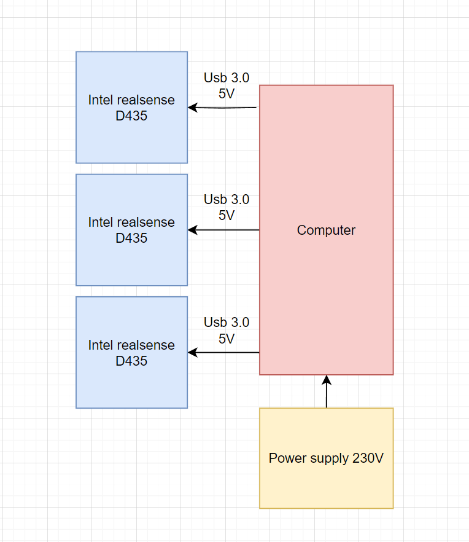
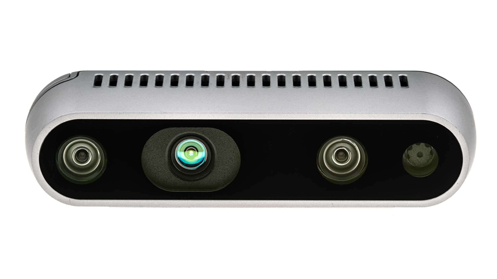

Autonomous Pruning Robot for Apple Orchards
Multidisciplinary research project with Wageningen Research, Fontys, Munckhof and Riwo into an autonomous apple-tree pruning robot, focused on the sensing requirements and a cutting mechanism.
Background
Automation in agriculture is becoming increasingly important because of labour shortages and the need for more efficient farming. This project investigated a robotic system that can autonomously prune apple trees in orchards. It was a multidisciplinary research project with five partners: Munckhof Fruit Tech Innovators and Riwo Engineering B.V. (developing the end-effectors), together with Wageningen Research, Saxion and Fontys. The work explicitly addressed the United Nations Sustainable Development Goals.

Sensing test setup
My Role & Objectives
Within the team I focused on the data analysis / sensing side and on the design of a mechanism for automatic branch detection and removal. The two project objectives were to research and conceptualize which data is necessary to identify branches that need removing, and to research and conceptualize a mechanism that can prune those branches. The project followed the V-model but deliberately covered only its analysis and conceptualization stages, replacing detailed design with a proof of principle.
The most impactful decision: sensing resolution
The most important decision came from a business-case analysis of two data-processing philosophies:
- Basic processing needs a point-cloud resolution of about 2 mm/pixel, but leads to a revenue loss of roughly €34,800 per year.
- Advanced processing needs a sub-millimetre resolution of about 0.5 mm/pixel, but can increase revenue by roughly €24,000 per year.
The advanced method was therefore selected, and the sensing requirements were derived from its demanding resolution target.

Sensing architecture

Intel RealSense D435
Sensor testing
Because a single still image does not have enough resolution even for the basic method, the proof of principle tested whether merging multiple static images could raise the effective resolution high enough. The result was disappointing: the achieved resolution was around 6.9 mm/pixel - almost 3.5× too coarse - making the Intel RealSense D435 unsuitable for reliable pruning-point determination.
Pruning mechanism
- Cutting is the most suitable method for branch removal.
- The required cutting force is about 95 N at 10 cm from the scissor fulcrum.
- Pneumatic cutting is the best way to implement it.
- An additional rotation axis was conceptualized, but Riwo had already designed this, so it was dropped.
Conclusions & Recommendations
The objectives were partly met: the required data was analysed and a sensing concept tested (but found infeasible with the chosen sensor), while the pruning mechanism was successfully conceptualized. The client valued the work as a solid pre-study for their Smart Mechatronics research lab. Main recommendations: replace the RealSense D435 with a Lidar sensor, pursue research into more effective pruning-point determination to relax the resolution requirement, and explore multispectral imaging for crop-health and frost prediction.